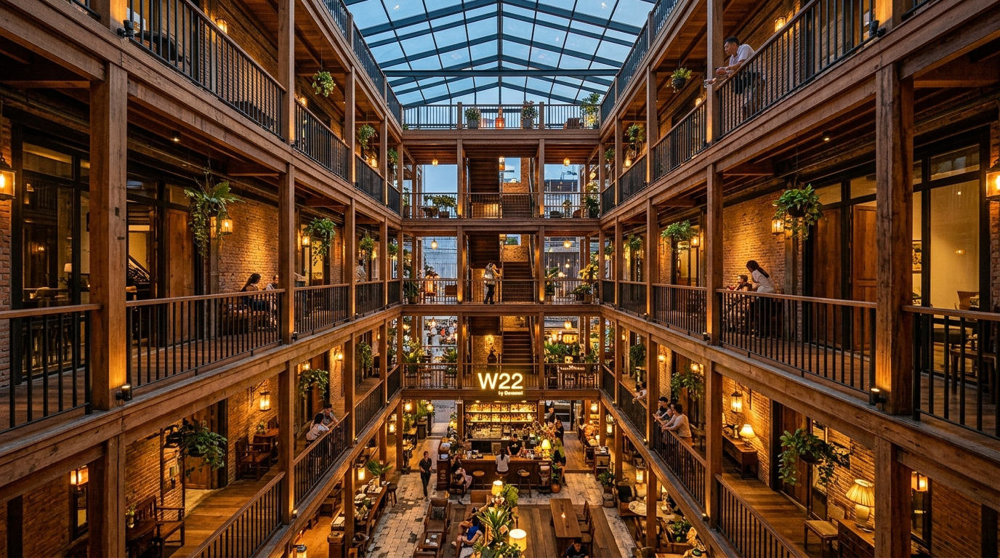

Curated 5-day cultural & culinary odyssey for 2 travelers. Staying in Chinatown at W22 by Burasari, tracking Michelin street food gems, Rattanakosin heritage, night markets, and creative arts.
Real-time budget breakdown for 2 travelers with live currency conversion.
| Activity / Sight | Details | Cost / Person |
|---|---|---|
| The Grand Palace & Emerald Buddha | Buy official tickets inside the gate only | 500 ฿ |
| Wat Arun (Temple of Dawn) | Photo access & prangs | 200 ฿ |
| MOCA Bangkok | 5 floors of modern Thai contemporary art | 300 ฿ |
| Chao Phraya Blue Flag Tourist Boat | Ratchawong → Phra Arthit → ICONSIAM (2 rides) | 80 ฿ |
| Khlong Lat Mayom Canal Boat | 1-hour scenic longtail canal tour | 100 ฿ |
| TCDC Creative & Design Center | Library, exhibitions & rooftop | ~100 ฿ |
| Wat Traimit (Golden Buddha) | World's largest solid gold Buddha (optional) | 100 ฿ |
154 curated items across dishes, food venues, shopping souvenirs, and must-see activities.
Located on Mittraphan Road (near 22 July Circle) in vibrant Chinatown. A stylish lifestyle boutique hotel that keeps you in the cultural pulse of Bangkok with zero hotel hopping.
